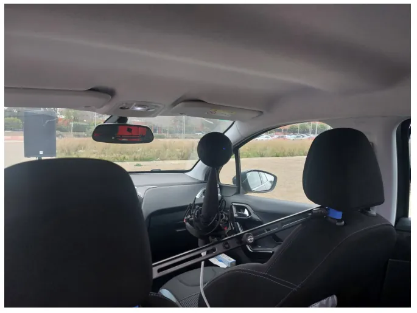
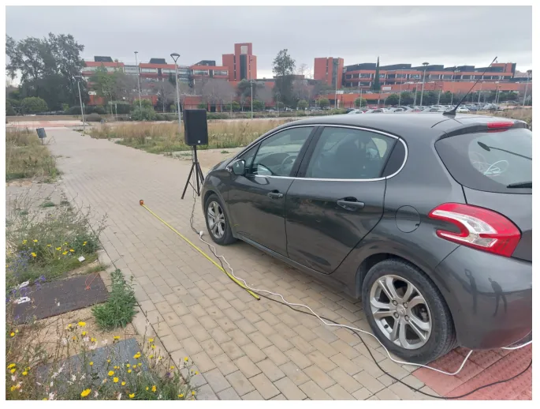
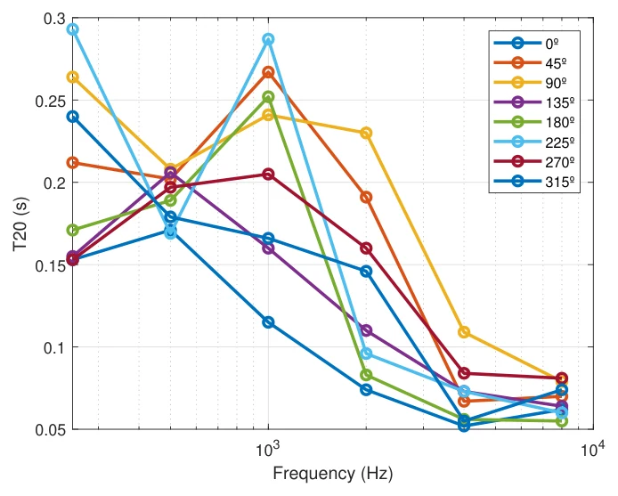
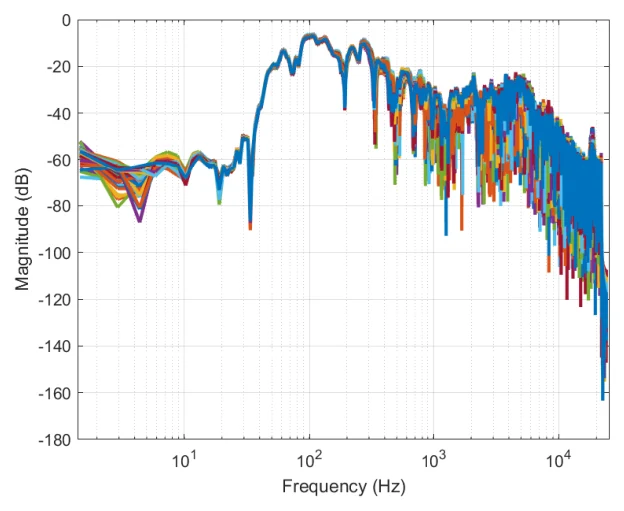
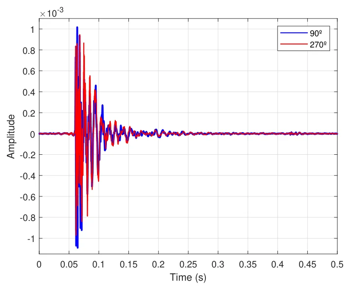
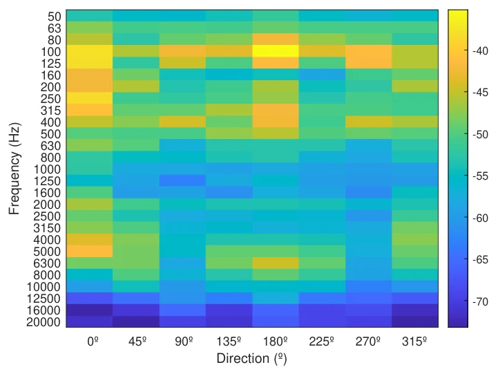

Abstract
Automotive audio research, spatial audio and machine learning need realistic acoustic data from inside vehicles. IR64-CAR provides impulse responses measured with a 64-capsule spherical microphone array (Eigenmike 64) at the center of a car cabin, with sources at eight directions around the car and the windows closed as in normal driving. The data show how external sound propagates, reflects and penetrates into the cabin, and support in-vehicle simulation, source localization, spatial filtering and driver-assistance systems.
Measurement setup


Acoustic analysis
Calibration and validation procedures were applied to the whole dataset. The analysis reports reverberation time, frequency responses across all channels, impulse responses for lateral directions and the spectral energy per direction.




Cite this work
J. López-Ballester, G. Greco, S. Roger, J. J. López, F. J. Ferri, and M. Cobos, “IR64-CAR: A Dataset of Impulse Responses Captured with a Spherical Microphone Array for Automotive Acoustic Research,” in Proc. Forum Acusticum / EuroNoise 2025, Málaga, pp. 6385–6391. doi: 10.61782/fa.2025.0508
@inproceedings{lopezballester2025ir64car,
title = {IR64-CAR: A Dataset of Impulse Responses Captured with a Spherical Microphone Array for Automotive Acoustic Research},
author = {L{\'o}pez-Ballester, Jes{\'u}s and Greco, Gioele and Roger, Sandra and L{\'o}pez, Jos{\'e} J. and Ferri, Francesc J. and Cobos, M{\'a}ximo},
booktitle = {Proc. 11th Convention of the European Acoustics Association, Forum Acusticum / EuroNoise},
pages = {6385--6391},
year = {2025},
doi = {10.61782/fa.2025.0508}
}Figures are reproduced from the open-access proceedings paper.